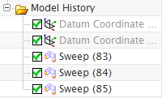
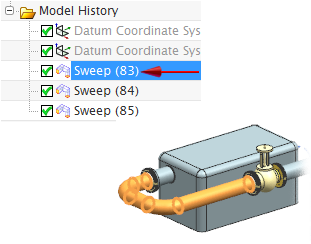
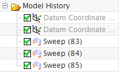
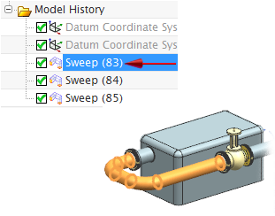

在部件导航器中查看型材
-
点击资源条上的部件导航器
 选项卡，以查看表示型材的三个特征。
选项卡，以查看表示型材的三个特征。
-
点击扫掠特征以使型材在图形窗口中高亮显示。

提示
要对部件导航器中的特征重新从零开始编号，需要在建模应用模块中重新排列特征顺序。
-
按 Esc 键以取消对型材的选择。
点击资源条上的部件导航器  选项卡，以查看表示型材的三个特征。
选项卡，以查看表示型材的三个特征。

点击扫掠特征以使型材在图形窗口中高亮显示。

|
提示 |
要对部件导航器中的特征重新从零开始编号，需要在建模应用模块中重新排列特征顺序。 |
按 Esc 键以取消对型材的选择。